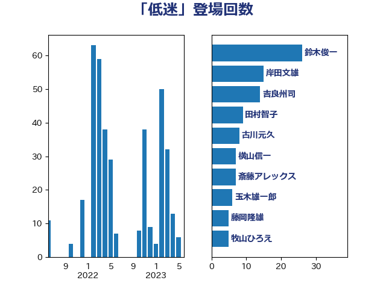

単語「低迷」

| 鈴木俊一 | 自由民主党 | 26 回 |
| 岸田文雄 | 自由民主党 | 15 回 |
| 吉良州司 | 無所属 | 14 回 |
| 田村智子 | 日本共産党 | 9 回 |
| 古川元久 | 国民民主党 | 8 回 |
| 横山信一 | 公明党 | 7 回 |
| 斎藤アレックス | 国民民主党 | 7 回 |
| 玉木雄一郎 | 国民民主党 | 6 回 |
| 藤岡隆雄 | 立憲民主党 | 5 回 |
| 牧山ひろえ | 立憲民主党 | 5 回 |
| 池畑浩太朗 | 日本維新の会 | 5 回 |
| 後藤茂之 | 自由民主党 | 5 回 |
| 吉田とも代 | 日本維新の会 | 5 回 |
| 加藤勝信 | 自由民主党 | 5 回 |
| 階猛 | 立憲民主党 | 4 回 |
| 足立敏之 | 自由民主党 | 4 回 |
| 西岡秀子 | 国民民主党 | 4 回 |
| 紙智子 | 日本共産党 | 4 回 |
| 田村まみ | 国民民主党 | 4 回 |
| 泉健太 | 立憲民主党 | 4 回 |
| 山際大志郎 | 自由民主党 | 4 回 |
| 伊藤孝恵 | 国民民主党 | 4 回 |
| 鈴木義弘 | 国民民主党 | 3 回 |
| 赤木正幸 | 日本維新の会 | 3 回 |
| 藤巻健太 | 日本維新の会 | 3 回 |
| 礒崎哲史 | 国民民主党 | 3 回 |
| 浜野喜史 | 国民民主党 | 3 回 |
| 浅田均 | 日本維新の会 | 3 回 |
| 沢田良 | 日本維新の会 | 3 回 |
| 柴田巧 | 日本維新の会 | 3 回 |
| 枝野幸男 | 立憲民主党 | 3 回 |
| 末松義規 | 立憲民主党 | 3 回 |
| 斉藤鉄夫 | 公明党 | 3 回 |
| 岡本三成 | 公明党 | 3 回 |
| 小山展弘 | 立憲民主党 | 3 回 |
| 安江伸夫 | 公明党 | 3 回 |
| 大塚耕平 | 国民民主党 | 3 回 |
| 馬場伸幸 | 日本維新の会 | 2 回 |
| 輿水恵一 | 公明党 | 2 回 |
| 足立康史 | 日本維新の会 | 2 回 |
| 谷合正明 | 公明党 | 2 回 |
| 西野太亮 | 自由民主党 | 2 回 |
| 西村康稔 | 自由民主党 | 2 回 |
| 藤木眞也 | 自由民主党 | 2 回 |
| 萩生田光一 | 自由民主党 | 2 回 |
| 舟山康江 | 国民民主党 | 2 回 |
| 羽田次郎 | 立憲民主党 | 2 回 |
| 稲津久 | 公明党 | 2 回 |
| 福重隆浩 | 公明党 | 2 回 |
| 福田昭夫 | 立憲民主党 | 2 回 |
| 神田潤一 | 自由民主党 | 2 回 |
| 田村貴昭 | 日本共産党 | 2 回 |
| 櫻井周 | 立憲民主党 | 2 回 |
| 横沢高徳 | 立憲民主党 | 2 回 |
| 東徹 | 日本維新の会 | 2 回 |
| 本村伸子 | 日本共産党 | 2 回 |
| 山田俊男 | 自由民主党 | 2 回 |
| 小倉將信 | 自由民主党 | 2 回 |
| 宗清皇一 | 自由民主党 | 2 回 |
| 前原誠司 | 国民民主党 | 2 回 |
| 倉林明子 | 日本共産党 | 2 回 |
| 住吉寛紀 | 日本維新の会 | 2 回 |
| 伊波洋一 | 無所属 | 2 回 |
| 中川郁子 | 自由民主党 | 2 回 |
| 高橋千鶴子 | 日本共産党 | 1 回 |
| 須藤元気 | 無所属 | 1 回 |
| 音喜多駿 | 日本維新の会 | 1 回 |
| 青柳仁士 | 日本維新の会 | 1 回 |
| 阿部知子 | 立憲民主党 | 1 回 |
| 阿部司 | 日本維新の会 | 1 回 |
| 長友慎治 | 国民民主党 | 1 回 |
| 金村龍那 | 日本維新の会 | 1 回 |
| 金城泰邦 | 公明党 | 1 回 |
| 野村哲郎 | 自由民主党 | 1 回 |
| 道下大樹 | 立憲民主党 | 1 回 |
| 近藤和也 | 立憲民主党 | 1 回 |
| 赤羽一嘉 | 公明党 | 1 回 |
| 赤池誠章 | 自由民主党 | 1 回 |
| 西銘恒三郎 | 自由民主党 | 1 回 |
| 藤川政人 | 自由民主党 | 1 回 |
| 落合貴之 | 立憲民主党 | 1 回 |
| 芳賀道也 | 国民民主党 | 1 回 |
| 舩後靖彦 | れいわ新選組 | 1 回 |
| 細田健一 | 自由民主党 | 1 回 |
| 簗和生 | 自由民主党 | 1 回 |
| 竹谷とし子 | 公明党 | 1 回 |
| 竹詰仁 | 国民民主党 | 1 回 |
| 竹内譲 | 公明党 | 1 回 |
| 福山哲郎 | 立憲民主党 | 1 回 |
| 神津たけし | 立憲民主党 | 1 回 |
| 石井苗子 | 日本維新の会 | 1 回 |
| 石井啓一 | 公明党 | 1 回 |
| 田中健 | 国民民主党 | 1 回 |
| 片山大介 | 日本維新の会 | 1 回 |
| 渡辺孝一 | 自由民主党 | 1 回 |
| 浦野靖人 | 日本維新の会 | 1 回 |
| 浜口誠 | 国民民主党 | 1 回 |
| 浅野哲 | 国民民主党 | 1 回 |
| 泉田裕彦 | 自由民主党 | 1 回 |
| 武部新 | 自由民主党 | 1 回 |
| 櫛渕万里 | れいわ新選組 | 1 回 |
| 柳ヶ瀬裕文 | 日本維新の会 | 1 回 |
| 松山政司 | 自由民主党 | 1 回 |
| 東国幹 | 自由民主党 | 1 回 |
| 杉田水脈 | 自由民主党 | 1 回 |
| 新妻秀規 | 公明党 | 1 回 |
| 徳永久志 | 立憲民主党 | 1 回 |
| 平木大作 | 公明党 | 1 回 |
| 平将明 | 自由民主党 | 1 回 |
| 川田龍平 | 立憲民主党 | 1 回 |
| 岬麻紀 | 日本維新の会 | 1 回 |
| 岩谷良平 | 日本維新の会 | 1 回 |
| 岩渕友 | 日本共産党 | 1 回 |
| 山崎正恭 | 公明党 | 1 回 |
| 山口那津男 | 公明党 | 1 回 |
| 山口壯 | 自由民主党 | 1 回 |
| 尾身朝子 | 自由民主党 | 1 回 |
| 小川淳也 | 立憲民主党 | 1 回 |
| 小宮山泰子 | 立憲民主党 | 1 回 |
| 宮本岳志 | 日本共産党 | 1 回 |
| 宮崎雅夫 | 自由民主党 | 1 回 |
| 宮下一郎 | 自由民主党 | 1 回 |
| 塩村あやか | 立憲民主党 | 1 回 |
| 堂込麻紀子 | 無所属 | 1 回 |
| 堀井巌 | 自由民主党 | 1 回 |
| 坂本祐之輔 | 立憲民主党 | 1 回 |
| 国光あやの | 自由民主党 | 1 回 |
| 和田有一朗 | 日本維新の会 | 1 回 |
| 古賀友一郎 | 自由民主党 | 1 回 |
| 古川直季 | 自由民主党 | 1 回 |
| 古川俊治 | 自由民主党 | 1 回 |
| 勝部賢志 | 立憲民主党 | 1 回 |
| 五十嵐清 | 自由民主党 | 1 回 |
| 中西祐介 | 自由民主党 | 1 回 |
| 中村裕之 | 自由民主党 | 1 回 |
| 中川正春 | 立憲民主党 | 1 回 |
| 中川宏昌 | 公明党 | 1 回 |
| 上田英俊 | 自由民主党 | 1 回 |
| 三木圭恵 | 日本維新の会 | 1 回 |
| 三上えり | 立憲民主党 | 1 回 |